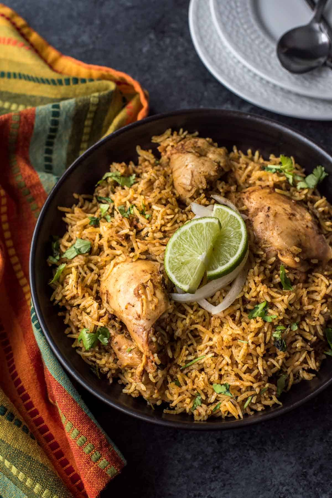

Biriyani

Description
Biryani is a mixed rice dish originating among the Muslims of the Indian subcontinent. It is made with Indian spices, rice, and usually some type of meat, and sometimes, in addition, eggs and potatoes. Biryani is one of the most popular dishes in South Asia, as well as among the diaspora from the region.
Ingredients
ToGrind
- Garlic- 7 cloves
- Ginger- 3 inch slice
- Green chilies- 8
- Small onions or pearl onions- 8
Making Chicken Masala
- Chicken, bone-in- 10 pieces
- Onion, sliced thin- 4
- Whole Cinnamon- 1 inch slice
- Whole Cardamom- 3
- Whole Cloves- 2
- Dried Bay leaves- 2
- Garam masala- 1 tbsp
- Tomatoes, chopped- 3
- Fennel powder- 2tbsp
- Yogurt- 2 tbsp
- Lemon juice- 1 tbsp
- Cilantro, chopped- ¼ cup
- Water- 1 cup
- Ghee- 2 tbsp
- Salt- 1½ tsp
Cooking the Rice
- Basmati Rice- 2½ cups
- Water drained from the cooked chicken and extra water- should equal to 4 cups
- Whole Cinnamon- 1 inch slice
- Whole Cardamom- 2
- Dried Bay leaf- 1
- Garam masala- 1 tsp
- Ghee- 2 tbsp
- Salt- ½ tsp
For Garnishing
- Saffron, soaked in ½ tbsp water- 2 pinches
- Fried onions- ½ cup
- Roasted Cashew nuts- 3 tbsp (roasted in ghee)
- Roasted Raisins- 1 tbsp (roasted in ghee)
- Cilantro, chopped- ¼ cup
- Mint leaves, chopped- 8 leaves
Steps
For Making The Masala
- Grind small onions, garlic, ginger and green chilies together into a coarse paste and keep aside.
- Place a pressure cooker over medium heat.
- Add ghee, add cinnamon, cardamom, cloves and bay leaves, saute for a few seconds.
- Add the onions and ½ tsp salt, saute for a few minutes.
- Add the ground small onion, garlic, ginger, green chili to the onions and saute for 3 minutes.
- Add garam masala and combine well.
- Add tomatoes and cook for 3 minutes.
- Add the chicken and combine well.
- Now, add the fennel powder, combine well.
- Add yogurt, lemon juice, chopped cilantro and mint leaves.
- Add salt according to your taste, combine well.
- Add 1 cup of water to the chicken.
- Close the cooker with its lid and cook until 2 whistles.
- After the pressure subsides, open the lid.
- Separate the liquid or gravy from the chicken through a mesh strainer.
- Keep aside the gravy and the chicken separately.
For Making The Rice
- I cooked the rice in the same pressure cooker used for cooking the chicken, you could use rice cooker or a non-stick sauce pan instead.
- Rinse the rice taken in a mesh strainer under running water.
- Place the cooker over low-medium heat.
- Add the ghee, add cinnamon, cardamom, bay leaf to it.
- Add garam masala, combine well.
- Immediately add the rice and combine well.
- Add the gravy from the cooked chicken (total 4 cups) and combine well.
- For 2½ cups of rice there should be 4 cups of gravy, if the gravy measures less than 4 cups add some water.
- Season with salt.
- Close the cooker and place the whistle on it.
- Keep the heat to low-medium and cook the rice for 12 to 15 minutes.
- Don't over cook the rice.
- Remove the cooker from the stove and let the pressure subside.
Mixing the Chicken and Rice
- Place a wide pan over medium heat.
- Add the cooked chicken to the pan, cook for a few minutes and let any water in the chicken masala dry out.
- Lower the heat and add the rice to the chicken, combine well.
- Drizzle saffron soaked in water over the biryani.
- Garnish with fried onions, roasted cashew nuts, roasted raisins, chopped cilantro and mint leaves.
- Remove the pan from the stove. Cover the pan with its lid and keep covered for 30 minutes.
- Serve the biryani with Raita, Pickle, Pappad etc.